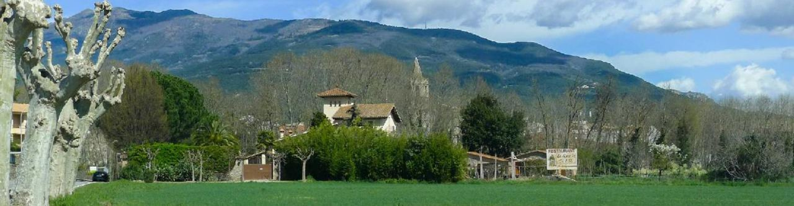

Ruta · Palautordera
El següent itinerari és fruit de la conjunció de la visita turística de Santa Maria de Palautordera i del Passeig pels arbres de Palautordera . El resultat ha estat un itinerari senzill per…